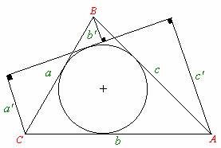
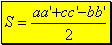
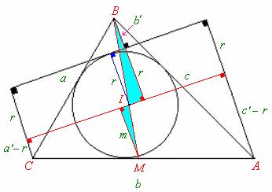
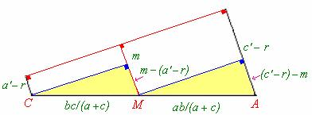

Autor : Ing. Juan C. Salazar
Profesor de geometría del equipo olimpico de Venezuela (Puerto Ordaz)
Co-Autor y Editor: Julio A. Miranda Ubaldo
Profesor de matemáticas de la academia pre-universitaria San Isidro (Huaral-Perú)
En geometría existen innumerables teoremas con nombres que quizá Ud. nunca haya oído como por ejemplo: El teorema de Fuss, el teorema de Leudesdorff , el teorema de Visschers , entre otros ..... y justamente hace algún tiempo por medio de comunicaciones personales con mi amigo el geómetra peruano Ing. Juan C. Salazar me manifestó la existencia del Teorema de Harcourt cuyo nombre no conocía pero cuyo enunciado si conocerán algunos de ustedes; pues bien el título de este trabajo es: “El teorema de Harcourt y sus aplicaciones” que estoy seguro a todos les será de mucho provecho .
Julio A. Miranda Ubaldo
Editor
Sea una circunferencia inscrita en un triángulo cualquiera ABC de lados a , b y c , si desde los vértices A, B y C del triángulo se levantan perpendiculares a una recta tangente a dicha circunferencia que corta a dos lados del triángulo, que tienen por medidas: a’, b’ y c’ respectivamente (ver figura adjunta) , entonces , el área “S” del triángulo ABC está dada por:
 |

Primera Demostración:
Efectuemos los trazos que se indican en la siguiente figura :
 |
Sabemos que el área del triángulo ABC en función de las medidas de sus lados e inradio “r” esta dada por:
Por el teorema del incentro en el triángulo ABC:  .....(2)
.....(2)
Por semejanza de los triángulos sombreados: .....(3)
De (2) y (3):
De donde: .....(4)
De otro lado por el primer teorema de la bisectriz interior:
.....(5)
De la figura: .....(6)
Resolviendo (5) y (6): y .....(7)
 |
De la figura N°2 tomemos una parte a saber:
Por semejanza de los triángulos sombreados:
despejando “m” de la expresión anterior:
.....(8)
igualando(4) y (8) tendremos:
Dividiendo ambos miembros entre dos y factorizando “r”:
De acuerdo a (1) por lo tanto: l.q.q.d